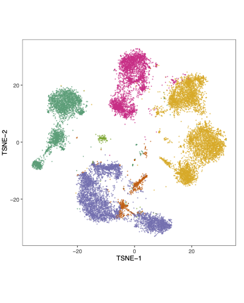
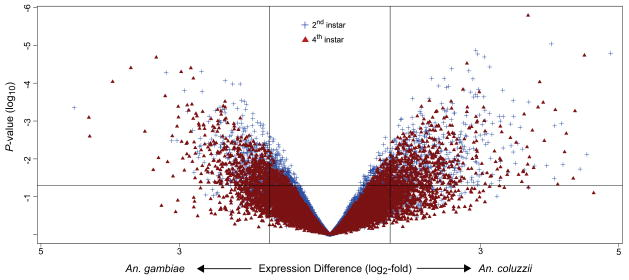

2025 (+1,+8)
40°.Randomized trial of activated vitamin D for acute kidney injury prevention in critically ill patients.
David E. Leaf, Tushar Shenoy, Kevin Zinchuk, Shruti Gupta, Julie-Alexia Dias, Daniel Sanchez-Almanzar, Changde Cheng, Tomoyoshi Tamura, Edy Y. Kim, Sushrut S. Waikar
JCI Insight , accepted.
39°.Targeting diabetic retinopathy with human iPSC-derived vascular reparative cells in a type 2 diabetes model.
Sergio Li Calzi, Dibyendu Chakraborty, Ping Hu, Ram Prasad, Yvonne Adu-Rutledge, Cristiano Vieira, Fadeela Sheini, Michael E. Boulton, Mervin C. Yoder, Changde Cheng\(^{\ddagger}\), Maria B. Grant\(^{\ddagger}\)
Cells , accepted.
38°.Germline pathogenic/ likely pathogenic mutations and subsequent neoplasms among childhood cancer survivors – a report from the Children’s Oncology Group ALTE03N1 study.
Liting Zhou , Purnima Singh , David K. Crossman , Joshua Richman , Patrick J Trainor , Changde Cheng , Xuexia Wang , Noha Sharafeldin , Lindsey Hageman , Maryam Sheikh , Melissa Richard , Danielle N. Friedman , Joseph Neglia , Zhaoming Wang , Melissa M Hudson , Saro H Armenian , Douglas Hawkins , Ravi Bhatia , Wendy Landier, Smita Bhatia
JCO , accepted.
37°. Clonal hematopoiesis and subsequent venous thromboembolism among survivors of autologous transplantation for lymphoma.
Radhika Gangaraju; Yanjun Chen; Lindsey Hageman; Alysia Bosworth; Elizabeth Ross; Liton Francisco; Purnima Singh; Melissa Richard; Chengcheng Yan; Rashi Kalra; Changde Cheng; Saro Armenian; Stephen Forman; Ravi Bhatia; Smita Bhatia.
JNCI: Journal of the National Cancer Institute.
36°. Acute myeloid leukemia microenvironment impairs neutrophil maturation and function through NFκB signaling.
Paran Goel, Sajesan Aryal, Alana M. Franceski, Valeriya Kuznetsova, Amanda Costa, Francesca Luca, Ashley N. Connelly, Daniel W. Phillips, Caroline C. Ennis, Brittany L. Crown, Sourajeet Karfa, Christina R Larson, Estelle Carminita, Virginia Camacho, Doug Welsch, Changde Cheng, Asumi Yokota, Isidoro Cobo, Hideyo Hirai, Rui Lu , Ravi Bhatia , Pran K. Datta, P. Brent Ferrell , Robert S. Welner
Blood , accepted.
35°. Alternative mRNA splicing in anthracycline-induced cardiomyopathy – a COG-ALTE03N1 report.
Purnima Singh \(^{\ast}\), David K. Crossman \(^{\ast}\), Changde Cheng, Patrick J. Trainor, Noha Sharafeldin, Xuexia Wang, Liting Zhou, Lindsey Hageman, Saro H. Armenian, Frank M. Balis, Douglas S. Hawkins, Frank G. Keller, Melissa M. Hudson, Joseph P. Neglia, A. Kim Ritchey, Jill P. Ginsberg, Wendy Landier, Smita Bhatia.
Cardio-Oncology 11, 47 (2025)
34°. Unraveling the clinical impact of differential DNA methylation in PDAC: A Systematic Review.
Raj Roy, Christopher Wu, Lauren Wheeler, K. Kerrick Akinola, Herbert Chen, J. Bart Rose, Changde Cheng, Smita Bhatia, Andrea Gillis
European Journal of Cancer (220) 115384.
33°. No evidence for sex-differential transcriptomes driving genome-wide sex-differential natural selection.
Matthew J Ming, Changde Cheng, Mark Kirkpatrick, Arbel Harpak
The American Journal of Human Genetics 112 (2), 254-260
32°. DNA damage response and repair genes and Anthracycline-induced cardiomyopathy in childhood cancer survivors: a report from the Children’s Oncology Group and the Childhood Cancer Survivor Study.
Xuexia Wang\(^{\ast}\), Purnima Singh\(^{\ast}\), Romina Cejas, Liting Zhou, Noha Sharafeldin, Patrick Trainor, Wendy Landier, Changde Cheng, Lindsey Hageman, Fan Wang, Yadav Sapkota, Yutaka Yasui, Melissa Hudson, Eric Chow, Saro Armenian, Joseph Neglia, Douglas Hawkins, Jill Ginsberg, Paul Burridge, Gregory Armstrong, and Smita Bhatia.
Circulation: Genomic and Precision Medicine 18(2), e004813.
2024 (+1,+3)
31°. Innate T cells regulate early inflammation and neurological outcomes after cardiac arrest and resuscitation
Tomoyoshi Tamura\(^{\ast}\), Changde Cheng \(^{\ast}\), Ana Villaseñor-Altamirano\(^{\ast}\), Kei Hayashida, Kohei Ikeda\(^{\ast}\), Kohei Yamada\(^{\ast}\), Jaivardhan A Menon, Louis T. Merriam, Jack Varon, Jiyoung Choi, Aidan M. Cullen, Jingyu Guo, Benjamin A. Olenchock, Mayra A. Pinilla-Vera, Reshmi Manandhar, Muhammad Dawood Amir Sheikh, Peter C. Hou, Patrick R. Lawler, William M. Oldham, Raghu R. Seethala, Immunology of Cardiac Arrest Network (I-CAN), Rebecca M. Baron, Erin A. Bohula, David A. Morrow, Alexandra Weissman, Michael B. Brenner, Xiang Chen \(^{\dagger}\), Fumito Ichinose \(^{\dagger}\), Edy Y. Kim \(^{\dagger}\) .
Science Translational Medicine 2024 Dec 4; (16) 776.
- Best Abstract – The American Heart Association’s (AHA) Scientific Sessions 2024
30°. Epigenetic regulation of non-canonical menin targets modulates menin inhibitor response in acute myeloid leukemia
Xinyue Zhou, Lixia Zhang, Sajesan Aryal, Virginia Veasey, Amanda Tajik, Cecilia Restelli, Steven Moreira, Pengcheng Zhang, Yanfeng Zhang, Kristin Hope, Yang Zhou, Changde Cheng, Ravi Bhatia, and Rui Lu.
Blood 2024 Nov 7; 144 (19): 2018–2032.
- Broken brakes: PRC loss foils menin inhibition – Commentary in Blood
28°. Protocol for immunophenotyping out-of-hospital cardiac arrest patients
Yamada K\(^{\dagger}\), Menon JA, Kim Y, Changde Cheng, Chen W, Shih JA, Villasenor-Altamirano AB, Chen X, Immunology of Cardiac Arrest Network (I-CAN), Tamura T, Merriam LT, Kim EY\(^{\dagger}\), Weissman AJ\(^{\dagger}\).
STAR Protocols 2024 Mar 15; 5 (1), 102874.
2023 (+4,)

27°. Genetic and epigenetic features of bilateral Wilms tumor predisposition in patients from the Children’s Oncology Group AREN18B5-Q
Murphy AJ\(^{\ast \dagger}\), Changde Cheng \(^{\ast}\), Williams J, Shaw TI, Pinto EM, Dieseldorff-Jones K, Brzezinski J, Renfro LA, Tornwall B, Huff V, Hong AL, Mullen EA, Crompton B, Dome JS, Fernandez CV, Geller JI, Ehrlich PF, Mulder H, Oak N, Maciezsek J, Jablonowski C, Fleming AM, Pichavaram P, Morton CL, Easton J, Nichols KE, Clay MR, Santiago T, Zhang J, Yang J, Zambetti GP, Wang Z, Davidoff AM, Chen X \(^{\dagger}\).
Nat Commun. 2023 Dec 18; 14, 8006.
26°. A review of single-cell rna-seq annotation, integration, and cell-cell communication
Changde Cheng \(^{\ast}\), Chen W\(^{\ast}\), Jin H\(^{\ast}\), Chen X.
Cells. 2023 Jul 30;12(15). Review.

25°. Single-cell transcriptomics reveal a hyperacute cytokine and immune checkpoint axis after cardiac arrest in patients with poor neurological outcome
Tamura T\(^{\ast}\), Changde Cheng \(^{\ast}\), Chen W, Merriam LT, Athar H, Kim YH, Manandhar R, Amir Sheikh MD, Pinilla-Vera M, Varon J, Hou PC, Lawler PR, Oldham WM, Seethala RR, Tesfaigzi Y, Weissman AJ, Baron RM, Ichinose F, Berg KM, Bohula EA, Morrow DA, Chen X, Kim EY.
Med. 2023 Jul 14;4(7):432-456.e6.

24°. Genome-wide mapping of cancer dependency genes and genetic modifiers of chemotherapy in high-risk hepatoblastoma
Fang J\(^{\ast}\), Singh S\(^{\ast}\), Changde Cheng \(^{\ast}\), Natarajan S\(^{\ast}\), Sheppard H\(^{\ast}\), Abu-Zaid A, Durbin AD, Lee HW, Wu Q, Steele J, Connelly JP, Jin H, Chen W, Fan Y, Pruett-Miller SM, Rehg JE, Koo SC, Santiago T, Emmons J, Cairo S, Wang R, Glazer ES, Murphy AJ, Chen T, Davidoff AM, Armengol C, Easton J, Chen X, Yang J.
Nat Commun. 2023 Jul 6;14(1):4003.
- Spatial omics takes off – St. Jude Progress
Our work serves as a key example of leveraging spatial transcriptomics to uncover the heterogeneity of hepatoblastoma tumors and to illuminate their responses to different therapeutic interventions.
2022 (,+1)

23°. Identification and targeting of a HES1-YAP1-CDKN1C functional interaction in fusion-negative rhabdomyosarcoma
Kovach AR, Oristian KM, Kirsch DG, Bentley RC, Changde Cheng, Chen X, Chen PH, Chi JA, Linardic CM.
Mol Oncol. 2022 Oct;16(20):3587-3605.
2021 (+1,+1)
22°. Molecular evolution and the decline of purifying selection with age
Changde Cheng, Kirkpatrick M.
Nat Commun. 2021 May 11;12(1):2657.

21°. Predicting the evolution of sexual dimorphism in gene expression
Houle D, Changde Cheng.
Mol Biol Evol. 2021 May 4;38(5):1847-1859.
2020 (+1,)
20°. Predicting multivariate responses of sexual dimorphism to direct and indirect selection
Changde Cheng, Houle D.
Am Nat. 2020 Oct;196(4):391-405.
2019 (+2,+1)
19°. Latent cellular analysis robustly reveals subtle diversity in large-scale single-cell RNA-seq data
Changde Cheng, Easton J, Rosencrance C, Li Y, Ju B, Williams J, Mulder HL, Pang Y, Chen W, Chen X.
Nucleic Acids Res. 2019 Dec 16;47(22):e143.
- Benchmarking clustering algorithms on estimating the number of cell types from single-cell RNA-sequencing data – Researchers at the University of Sydney ranked our scLCA among the leading methods for accurate cell type number estimation in single-cell RNA sequencing analysis: “one of the top-performing methods on the number of cell type estimation …”

18°. Complex interactions between day length and diurnal patterns of gene expression drive photoperiodic responses in a perennial C(4) grass
Weng X, Lovell JT, Schwartz SL, Changde Cheng, Haque T, Zhang L, Razzaque S, Juenger TE.
Plant Cell Environ. 2019 Jul;42(7):2165-2182.

17°. Inversions are bigger on the X chromosome
Changde Cheng, Kirkpatrick M.
Mol Ecol. 2019 Mar;28(6):1238-1245.
2018 (+1,+2)

16°. Systems genetic analysis of inversion polymorphisms in the malaria mosquito Anopheles gambiae
Changde Cheng, Tan JC, Hahn MW, Besansky NJ.
Proc Natl Acad Sci U S A. 2018 Jul 24;115(30):E7005-E7014.
15°. Metabolic signaling directs the reciprocal lineage decisions of αβ and γδ T cells
Yang K, Blanco DB, Chen X, Dash P, Neale G, Rosencrance C, Easton J, Chen W, Changde Cheng, Dhungana Y, Kc A, Awad W, Guo XJ, Thomas PG, Chi H.
Sci Immunol. 2018 Jul 6;3(25).
14°. Sex differences in recombination in sticklebacks
Sardell JM, Changde Cheng, Dagilis AJ, Ishikawa A, Kitano J, Peichel CL, Kirkpatrick M.
G3 (Bethesda) . 2018 May 31;8(6):1971-1983.
2017 (+1,+1)
13°. Environmental plasticity in the intersexual correlation and sex bias of gene xxpression
Changde Cheng, Kirkpatrick M.
J Hered. 2017 Oct 30;108(7):754-758.
12°. Extensive genetic differentiation between homomorphic sex chromosomes in the sosquito vector, Aedes aegypti
Fontaine A, Filipovic I, Fansiri T, Hoffmann AA, Changde Cheng, Kirkpatrick M, Rašic G, Lambrechts L.
Genome Biol Evol. 2017 Sep 1;9(9):2322-2335.
2016 (+2,+1)

11°. Sex-Specific selection and sex-biased gene expression in humans and flies
Changde Cheng, Kirkpatrick M.
PLoS Genet. 2016 Sep;12(9):e1006170.
10°. Transcriptomic differences between euryhaline and stenohaline malaria vector sibling species in response to salinity stress
Uyhelji HA, Changde Cheng, Besansky NJ.
Mol Ecol. 2016 May;25(10):2210-25.

9°. Radical remodeling of the Y chromosome in a recent radiation of malaria mosquitoes
Hall AB\(^{\ast}\), Papathanos PA\(^{\ast}\), Sharma A\(^{\ast}\), Changde Cheng \(^{\ast}\), Akbari OS, Assour L, Bergman NH, Cagnetti A, Crisanti A, Dottorini T, Fiorentini E, Galizi R, Hnath J, Jiang X, Koren S, Nolan T, Radune D, Sharakhova MV, Steele A, Timoshevskiy VA, Windbichler N, Zhang S, Hahn MW, Phillippy AM, Emrich SJ, Sharakhov IV, Tu ZJ, Besansky NJ.
Proc Natl Acad Sci U S A. 2016 Apr 12;113(15):E2114-23.
2015 (,+1)

8°. Genome-wide QTL mapping of saltwater tolerance in sibling species of Anopheles (malaria vector) mosquitoes
Smith HA, White BJ, Kundert P, Changde Cheng, Romero-Severson J, Andolfatto P, Besansky NJ.
Heredity (Edinb). 2015 Nov;115(5):471-9.
2014 (,+2)

7°. Gene expression divergence between malaria vector sibling species Anopheles gambiae and An. coluzzii from rural and urban Yaoundé Cameroon
Cassone BJ, Kamdem C, Changde Cheng, Tan JC, Hahn MW, Costantini C, Besansky NJ.
Mol Ecol. 2014 May;23(9):2242-59.

6°. Cuticular differences associated with aridity acclimation in African malaria vectors carrying alternative arrangements of inversion 2La
Reidenbach KR, Changde Cheng, Liu F, Liu C, Besansky NJ, Syed Z.
Parasit Vectors. 2014 Apr 10;7:176.
2013 (üê∏)
2012 (+1,)

5°. Ecological genomics of Anopheles gambiae along a latitudinal cline: a population-resequencing approach
Changde Cheng, White BJ, Kamdem C, Mockaitis K, Costantini C, Hahn MW, Besansky NJ.
Genetics. 2012 Apr;190(4):1417-32.
2011 (,+2)

4°. Divergent transcriptional response to thermal stress by Anopheles gambiae larvae carrying alternative arrangements of inversion 2La
Cassone BJ, Molloy MJ, Changde Cheng, Tan JC, Hahn MW, Besansky NJ.
Mol Ecol. 2011 Jun;20(12):2567-80.
3°. Adaptive divergence between incipient species of Anopheles gambiae increases resistance to Plasmodium
White BJ, Lawniczak MK, Changde Cheng, Coulibaly MB, Wilson MD, Sagnon N, Costantini C, Simard F, Christophides GK, Besansky NJ.
Proc Natl Acad Sci U S A. 2011 Jan 4;108(1):244-9.
2010 (,+1)

2°. Genetic association of physically unlinked islands of genomic divergence in incipient species of Anopheles gambiae
White BJ, Changde Cheng, Simard F, Costantini C, Besansky NJ.
Mol Ecol. 2010 Mar;19(5):925-39.
2009 (,+1)

1°. The population genomics of trans-specific inversion polymorphisms in Anopheles gambiae
White BJ, Changde Cheng, Sangaré D, Lobo NF, Collins FH, Besansky NJ.
Genetics. 2009 Sep;183(1):275-88.
\({\ast}\): First authors
\({\dagger}\): Corresponding author(s)
\({\ddagger}\): Senior authors
Lab member